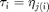

Definition of user functions
(c) DDE-BIFTOOL v. 3.1.1(75), 31/12/2014
(Please load ddebiftool into path first, see demo1.html.) To define a system, the user should provide Matlab functions defining the right-hand side (in the example called neuron_sys_rhs) and the indices for the delays in the parameter vector (called neuron_tau in our example).
Contents
Right-hand side
A function defining the right-hand side :
function y=sys_rhs(xx,par)
This function has two arguments, xx , which contains the state variable(s) at the present and in the past, xx , par which contains the parameters, par .
For the example, this is ( is called neuron_sys_rhs in our example)
neuron_sys_rhs=@(xx,par)[... -par(1)*xx(1,1)+par(2)*tanh(xx(1,4))+par(3)*tanh(xx(2,3));.... -par(1)*xx(2,1)+par(2)*tanh(xx(2,4))+par(4)*tanh(xx(1,2))];
Delays
The delays , are considered to be part of the parameters (, ). This is natural since the stability of steady solutions and the position and stability of periodic solutions depend on the values of the delays. Furthermore delays can occur both as a 'physical' parameter and as delay, as in . From these inputs the right-hand side is evaluated at time  . For equations with constant delays DDE-Biftool determines which parameters are delays by calling an argument-less function of the type
. For equations with constant delays DDE-Biftool determines which parameters are delays by calling an argument-less function of the type
function d=sys_tau()
In the example we order the parameters as par . Thus, (giving it the name neuron_tau):
neuron_tau=@()[5,6,7]; ind_a21=4; % used later for continuation ind_taus=7; % used later for continuation
Jacobians of user-provided functions
Optionally (recommended) the user may also specify the partial derivatives of the user-defined functions with respect to states, delayed states and parameters. For constant delays only the derivatives of are required. They should be provided as a function of the form
function J=sys_deri(xx,par,nx,np,v)
providing the partial derivatives of first and second order (see file neuron_sys_deri.html for details).
Definition of structure funcs
Similar to standard functions such as ode45 DDE-Biftool's routines now have an argument that defines the right-hand side. Since DDE-Biftool needs several user-defined functions (sys_rhs, sys_tau, optionally sys_deri, sys_cond etc) these functions are collected in a structure funcs. This structure funcs is best set up by calling the (new) DDE-Biftool routine set_funcs wit a sequence of name-value pairs. Each name-value pair corresponds to a field in the structure. Fields that are not listed as arguments of set_funcs get replaced by a default if possible.
Possible argument names are:
- 'sys_rhs' (default sys_rhs if file sys_rhs.m present in folder): right-hand side sys_tau
- 'sys_tau' (default @()[]): function defining delays
- 'sys_deri' (default @df_deriv): function defining partial derivatives of sys_rhs
- 'sys_ntau' (default 0, only needed for state-dependent delays) number of delays
- 'sys_cond' (default @dummy_cond) function providing extra conditions
- 'sys_dtau' (default @df_derit, only needed for state-dependent delays): function defining partial derivatives of sys_tau
- 'x_vectorized' (logical, default false) set to true if sys_rhs, sys_deri, (sys_tau and sys_dtau for SD-DDEs) accept an argument xx with three dimensions. For periodic-orbit computations the function will be called with all collocation points simultaneously if x_vectorized is true.
Other fields are tp_del (true if delays are state-dependent), sys_deri_provided (true if user has provided sys_deri) and sys_dtau_provided (true if user has provided sys_dtau).
funcs=set_funcs(... 'sys_rhs',neuron_sys_rhs,... 'sys_tau',@()[5,6,7],... 'sys_deri',@neuron_sys_deri) %#ok<NOPTS>
funcs =
sys_rhs: [function_handle]
sys_ntau: @()0
sys_tau: @()[5,6,7]
sys_cond: @dummy_cond
sys_deri: @neuron_sys_deri
sys_dtau: @(it,x,p,nx,np)df_derit(funcs,it,x,p,nx,np)
sys_mfderi: [function_handle]
x_vectorized: 0
tp_del: 0
sys_deri_provided: 1
sys_dtau_provided: 0
sys_mfderi_provided: 0
Save and continue to continuation and stability of steady states demo1_stst.html
save('demo1_funcs_results.mat');